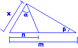
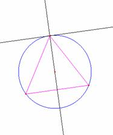
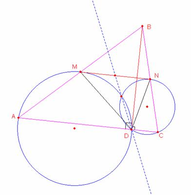
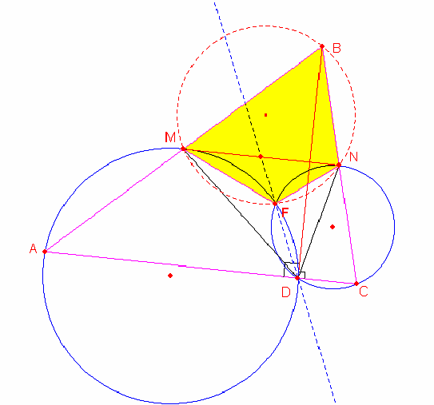
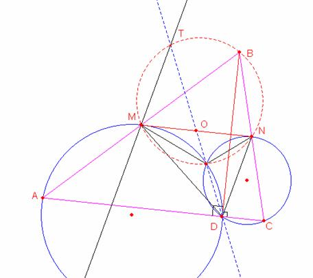
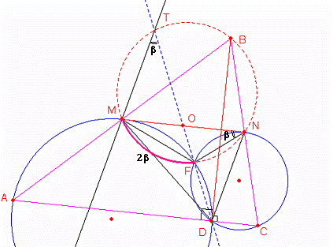
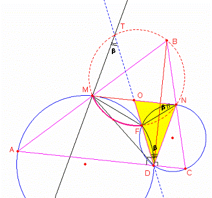
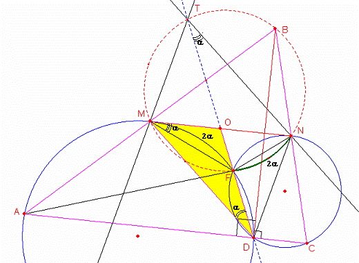
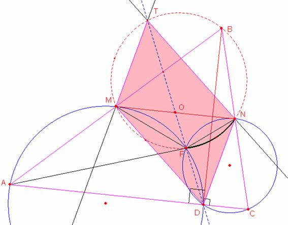

Problema para el aula
Problema 310
Muestra que la recta DE pasa por el punto medio de MN.
X Olimpíada Matemática
Rioplatense
San Isidro, 13 de Diciembre
de 2001
Nivel I – Segundo Día
http://www.oma.org.ar/enunciados/omr10.doc
Solución
de William Rodríguez Chamache.
profesor de geometria de la "Academia
integral class"
Trujillo- Perú
Sabemos que:

Se cumple que β = α
Además en todo triángulo isósceles toda paralela a las base es tangente a la circunferencia circunscrita al triángulo.

Sea la grafica con los datos indicados

Por propiedad sabemos que el cuadrilátero MBNF es inscriptible (puntos de Miquel)

Primero demostraremos que las rectas que pasan por los punto M, T y D, N son paralelas

Del gráfico observamos que

Ahora observamos que la circunferencia circunscrita al triángulo DNC desde el punto O (OFD es una secante y ON es una tangente) luego se cumple que esto implica que los ángulos del triángulo OND los ángulos finalmente demostramos que las rectas que pasan por los puntos M, T y D, N son paralelas

Ahora demostraremos que las rectas que pasan por los puntos M, D y T, N son también paralelas
Según el gráfico observamos que: ,
Y como el ángulo OMF es semi Inscrito entonces el arco con esto determinamos que las rectas que pasan por los puntos T, N y M, D son paralelas

Finalmente el cuadrilátero MTND es un paralelogramo donde TD y MN son sus diagonales por lo tanto el punto O es el punto medio

Figure PRO310.fig
Applet created on 1/05/06 by william with CabriJava
Prof.: William Rodríguez chamache